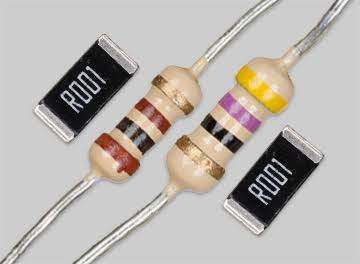
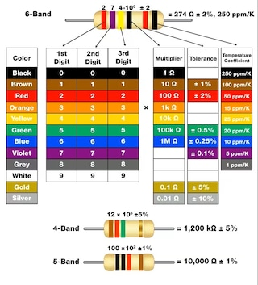

Understanding Resistors

This is a standard resistor. Resistors are used to limit the current in an electrical circuit.

The color bands on a resistor indicate its resistance value. Here is how you can decode them:
- First Band: Indicates the first digit of the resistance value.
- Second Band: Indicates the second digit of the resistance value.
- Third Band: Indicates the multiplier (number of zeros to add).
- Fourth Band: Indicates the tolerance of the resistor.
Calculating Resistance from Color Codes
To calculate the resistance value from the color bands, follow these steps:
- Identify the colors of the bands on the resistor.
- Refer to the color code chart to determine the corresponding digits and multiplier.
- Combine these digits and apply the multiplier to get the final resistance value.
For example, if a resistor has the color bands Red, Red, Brown, and Gold:
- Red = 2
- Red = 2
- Brown = 10 (multiplier)
- Gold = ±5% tolerance
The resistance value is 22 * 10 = 220 Ohms with a tolerance of ±5%.